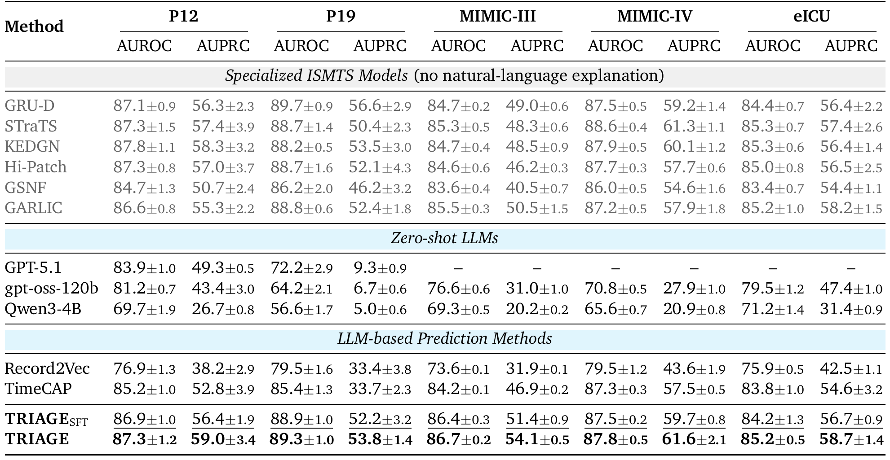
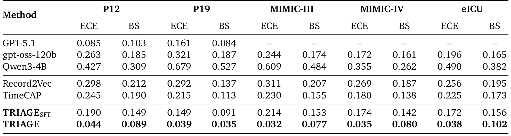
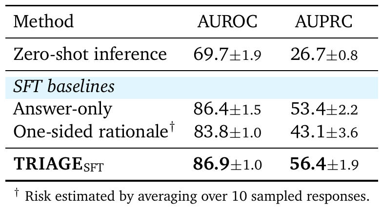
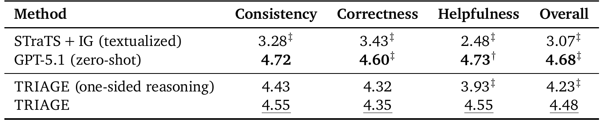
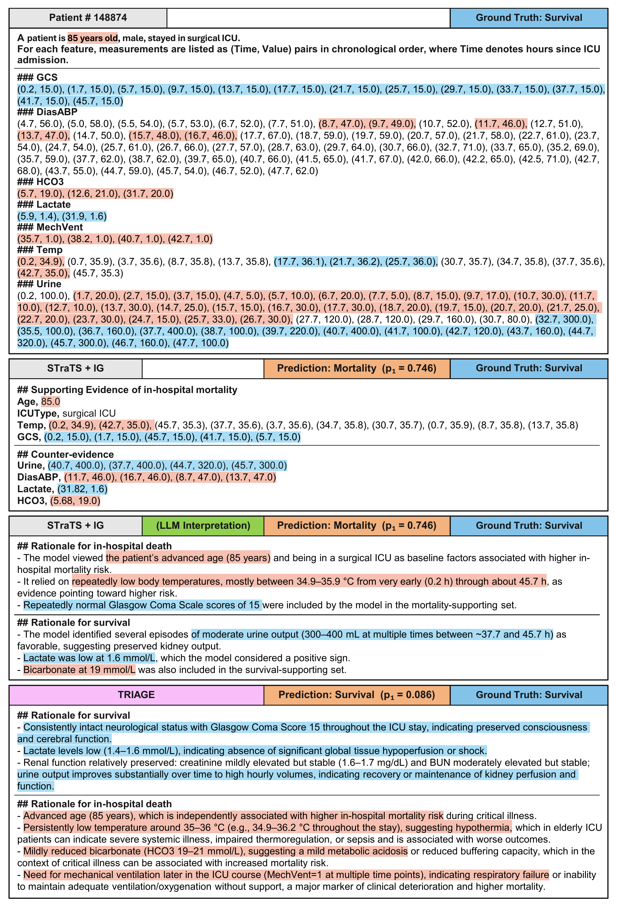
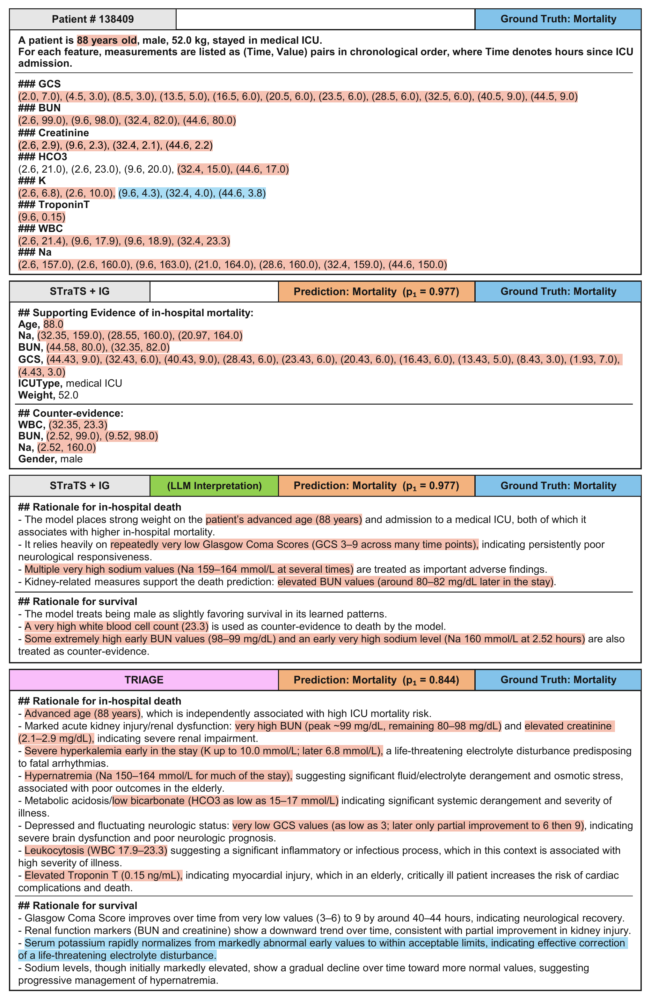
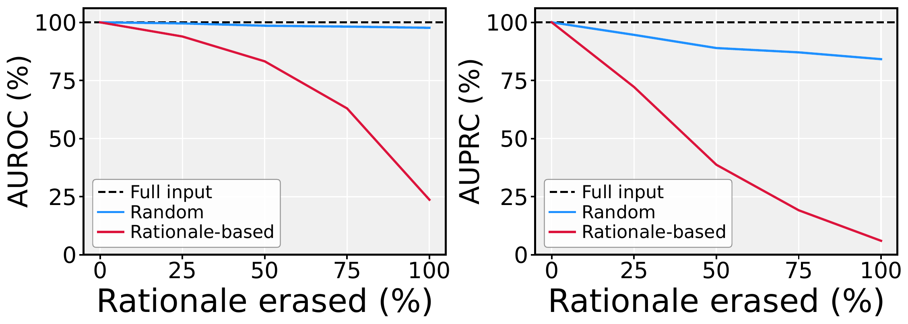

Clinical early warning systems built on irregularly sampled medical time series (ISMTS) from electronic health records must deliver continuous risk scores for patient triage as well as interpretable rationales that clinicians can verify. Large language models (LLMs) are uniquely positioned for both, deriving risk from their output probabilities and rationales from their medical knowledge. However, we find that conventional LLM reasoning collapses graded risk into overconfident predictions and thereby undermines the cross-patient comparability on which triage depends. We refer to this failure mode as risk polarization and identify two underlying behaviors: early commitment to a single outcome, and one-sided reasoning that focuses only on the evidence for that outcome. To address this, we propose TRIAGE, a framework that trains an LLM to reason dialectically over competing clinical outcomes by eliciting outcome-specific rationales. This dialectical formulation mitigates risk polarization, enabling a single LLM to jointly provide explicit clinical rationales and risk scores comparable across patients. Across five ISMTS benchmarks, TRIAGE improves mean AUPRC by 17.0% and reduces mean calibration error by 82.8% relative to the competitive LLM-based baseline, while surpassing the strongest ISMTS baseline by 3.5% in mean AUPRC.
Dialectical reasoning over alternative outcomes. Conventional reasoning-then-answer prompting pre-commits to a verdict and cites one-sided evidence, which collapses the LLM's risk scores to the extremes. TRIAGE instead produces a dedicated rationale for each candidate outcome, in either order, and ends the chain with a ## Final Decision header followed directly by the outcome token. The risk score is the model's implicit probability at that position, so it stays graded and comparable across patients.
Two-stage training. Stage 1 fine-tunes the LLM on outcome-specific rationales synthesized by a strong LLM, which is prompted separately for each outcome to list only the supporting evidence without fabricating it. Stage 2 refines the model with GRPO on its own samples: cross-entropy on the decision token supervises the implicit probability, and a batch-level margin reward pushes the log-odds of positive and negative patients apart to improve discrimination and calibration.
We evaluate TRIAGE, trained on Qwen3-4B-Base, on five ISMTS benchmarks (P12, P19, MIMIC-III, MIMIC-IV, eICU; P19 targets sepsis onset within 6 hours, the others in-hospital mortality) against specialized ISMTS models, LLM-based prediction methods and zero-shot LLMs. All numbers are mean ± standard deviation over five runs; AUROC and AUPRC are in %.
Discrimination. With SFT alone, TRIAGE reaches a mean AUPRC of 55.3, 12.6% above TimeCAP, the strongest LLM-based method, and within 0.3 points of the best ISMTS baselines. RL raises it to 57.4, 3.5% above GRU-D, with the best AUPRC on four of the five benchmarks and the second best on the remaining one.

Discrimination results. Specialized ISMTS models (gray) cannot explain their predictions and are shown for reference; bold and underline mark the best and second-best explainable methods. GPT-5.1 is not evaluated on the PhysioNet-credentialed datasets.
Calibration. LLM-based baselines remain poorly calibrated (mean ECE 0.219 for TimeCAP and 0.285 for Record2Vec). RL reduces the mean ECE of TRIAGE from 0.180 to 0.038 and the mean Brier score from 0.138 to 0.077, giving the lowest ECE and Brier score on every benchmark.

Calibration results. Expected calibration error (ECE) and Brier score (BS); lower is better. Bold marks the best result.
Answer-only SFT beats zero-shot inference but gives no justification, and one-sided rationales inherit risk polarization and underperform answer-only SFT even at 10× inference cost. Dialectical reasoning achieves the best AUROC and AUPRC, and two clinicians rate its rationales as more helpful than one-sided ones (+0.62, p<0.001) with correctness unchanged.

Ablation on the reasoning structure (P12, SFT setting).

Expert evaluation of 120 rationales for 30 P12 ICU stays on a 1–5 scale. †/‡: differs from TRIAGE at p<0.05 / p<0.01.
Two P12 cases comparing the rationales of TRIAGE with Integrated Gradients (IG) applied post hoc to STraTS, with the attributions textualized and interpreted by GPT-5.1.
Case 1 (P12): survivor — STraTS + IG predicts mortality (p = 0.746), TRIAGE predicts survival (p = 0.086)

Case 2 (P12): non-survivor — both predict mortality; TRIAGE weighs the counter-evidence explicitly (p = 0.844)

Erasing the measurements cited by a rationale degrades agreement with the full-input prediction monotonically, whereas erasing the same number of random measurements leaves it nearly unchanged. Regenerated rationales drop the claims whose evidence was erased, and only 1.3% of rationales cite a value absent from the record.

Agreement with the full-input prediction on P12 as the cited measurements (Rationale-based) or random measurements (Random) are erased.
@misc{jang2026triage,
title={TRIAGE: Dialectical LLM Reasoning for Explainable Risk Prediction on Irregularly Sampled Medical Time Series},
author={Jang, Hyeongwon and Chu, Gyouk and Kim, Changhun and Yoon, Hangyul and Lee, Jeonguk and Yang, Eunho and Park, Joonhyung},
year={2026},
note={Preprint}
}